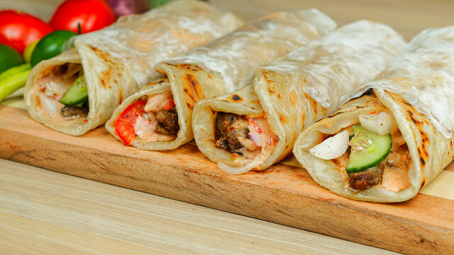

Kathi Roll
Street food atau jajanan kaki lima juga sangat terkenal di India, makanan yang dijajakan juga sangat beragam mulai dari makanan berat sampai camilan. Kathi roll salah jajanan kaki lima yang paling terkenal ini punya rasa yang sederhana dan rasanya bisa diterima oleh siapa saja. Kathi roll ini mirip dengan kebab ala timur tengah yang membuat beda adalah roti yang membungkusnya. Kathi roll menggunakan paratha sejenis flat bread atau roti India.